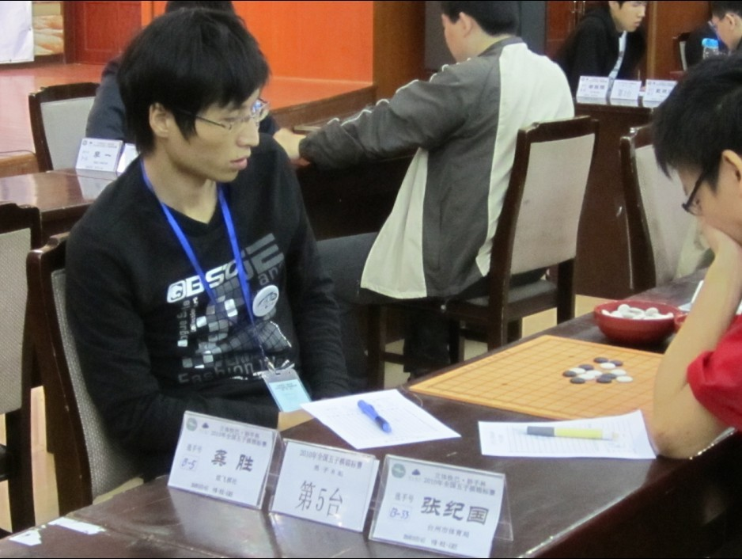
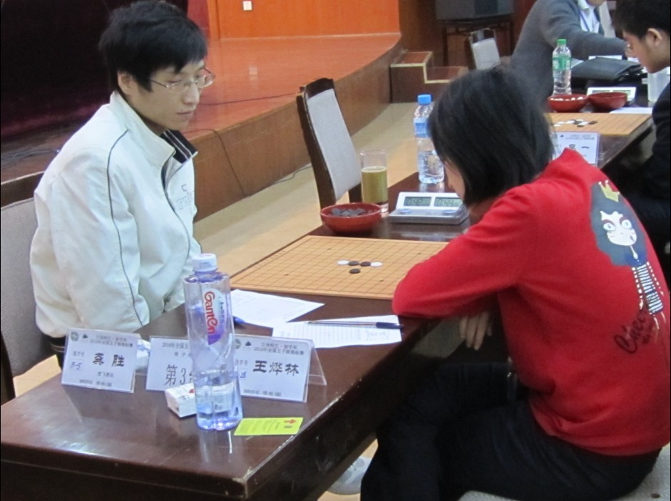
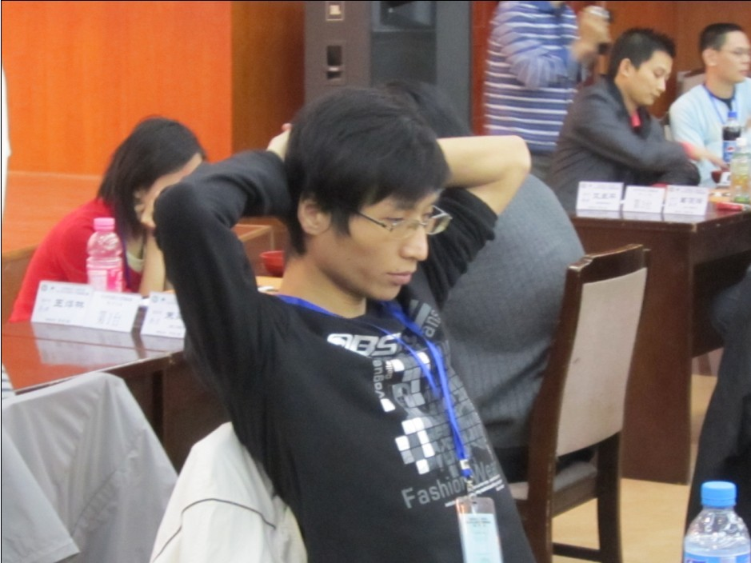

2010全锦赛小结
#1 2010全锦赛小结 作者：流逝 发表时间：2010-10-12 19:50:32
赛前就对这次比赛没有太多的信心，这种感觉是毫无根据和理由就突发而来的。
30号下午的火车又因为去火车站的途中堵车而没有赶到，于是在炫飞家族的帮助下又定了10月1日晚的飞机。算是经历了一个不大不小的意外，终于还是在比赛前赶到了石家庄。
还是先谈谈自己在这次比赛中下的几盘棋。
第一轮轮空
第二轮：松月局 吴刚（黑）胜 龚胜（白）
=======上图对应的爱五子棋谱代码如下，以便你拆解：========
h8h9h7h6i9g7f8i8f10j7k6j8i7j6j5g8f7g10f11f9g9e11j10g4g6e8d7e7e9d8f6i4h4k11i12j12i13i11j11l9h13g14f13g13f12f14h12
======================================================
我开局之后吴刚选择了交换，14手没有挡在中间是为了避开流行趋势，定式一直到24手，黑棋25的选择让局面开始平和。25到34的交换，让我感觉还是比较满意的，白棋在左上和右上都留下了一些机会。黑35必然的要点，交换到39手的时候，我开始很细致的对局面进行分析。
实战中考虑到只要能限制住黑35-39的活2，黑在上面就没有直接的vct可以取胜，于是我开始对8线上面的三个点进行选择，计算出来的结果都让我感觉到很不满意，黑都能一手就把白棋防干净。于是我又开始寻找其他的进攻方式，发现了实战中的40手。感觉不错，于是很高兴的就落了下去。拍完钟再一看，没管住黑棋的活2啊，于是被对手简单3步杀取胜。
第三轮：梳星局 张纪国（黑） 负 龚胜（白）
=======上图对应的爱五子棋谱代码如下，以便你拆解：========
h8h9j10i9i8j8g9i7h10k9l10i10l9l11f8e7g8e8g11g10f11e11f9e10e9f10d10g7j12i11j11j13k10i12i13m9h7g6g5m10m8n7n9j5j6k4k6l6l7o10m5l3m2l5j3l4l2n4
======================================================
压力最大的一盘棋，因为输了的后果会………………这种压力，让我在一片迷糊中还能把所有的唯一防算得干干净净。 
对方开出疏星后，我选择执白并且留下了2打。对于6手的选择依然是为了避开常规变化，不过从实战的过程来看，对方比我更熟悉这个6之后的变化。
一直到13，都是双方的最强走法。14的选择让我迷惑，很久以前觉得下12手上面不错，告诉黄金贤之后被他好好的嘲笑了一翻弄得我也不敢下了，记忆中实战选择的14黑是胜不了的，于是就这么下吧。
黑15活三，我第一感觉就是我要输了。。上下左右黑棋全有连接，太恐怖了。16也不敢不跟，挡上面的话黑一挡白棋的33点就不知道如何去防了。17到19，对手下得很快，这让我要输的感觉更强烈，虽然自己去计算黑棋的进攻白棋都能有唯一防，可是计算总是不能和研究相比的，一些变态的vct并不是人脑在短时间内可以找到的。
21落下之后，我开始对我之前的计算进行复算，头痛得不行，可是想到输了回去之后会有很严重的后果，最终还是确定到了实战中的22是唯一防，其他的点黑都直接vct了。
26之后，我开始放心下来了。后面的棋下得波澜不惊，直到最后的抓黑棋的44禁手，一共也没用5分钟。压力果然能让人战胜自己啊。
=======上图对应的爱五子棋谱代码如下，以便你拆解：========
h8h9h7h6i10i6j6i8i7g9j7k7j9j8l6k8k5l4j4i3m7n8m8m6l7n9l8
======================================================
我开出松月对方果然没换，于是把比赛前黄立勤给我摆的一个变化，被我一个子不变的摆了上去，白16必败。
=======上图对应的爱五子棋谱代码如下，以便你拆解：========
h8h9h7h6j7g8g6i7f5i8i9i5f7f6h5i4i6g4j10g7e4d3j4k8i11j8k9l8m8g5f4e7d8d6e9d4d7h4i3j6k7g3f2g1g2d2d5c3
======================================================
#2 Re:2010全锦赛小结 作者：龙小小 发表时间：2010-10-12 20:40:19
哥哥加油加油#3 Re:2010全锦赛小结 作者：炫飞兔子 发表时间：2010-10-13 9:50:30
不错不错，带病上阵，精神可嘉，值得表扬！#4 Re:2010全锦赛小结 作者：伊依 发表时间：2010-10-15 11:43:14
流猪，更严重的后果是什么啊
#5 Re:2010全锦赛小结 作者：冰雪笑醉 发表时间：2010-10-17 15:18:57
阿弥陀佛！
#6 Re:2010全锦赛小结 作者：岑小鱼 发表时间：2010-10-17 19:09:30
第三图在QQ游戏里中过招#7 Re:2010全锦赛小结 作者：炫飞冰弦 发表时间：2010-10-20 17:57:06
附 流逝老师地比赛靓照～



［此帖子已被 炫飞冰弦 在 2010-10-20 17:58:01 编辑过］